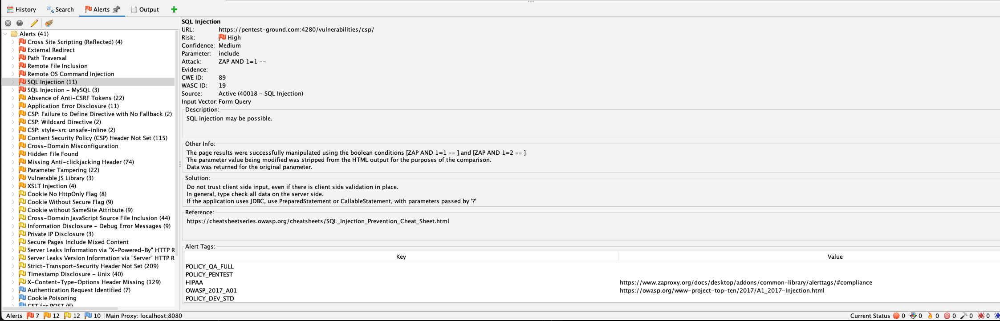
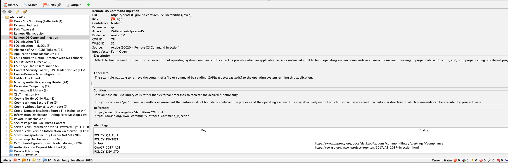
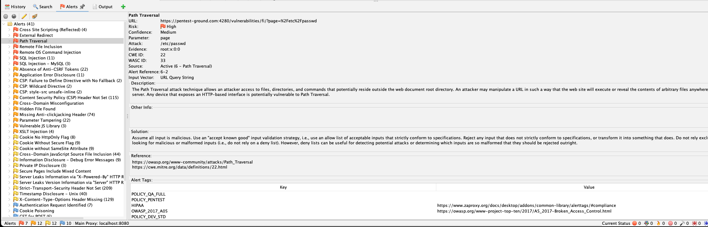
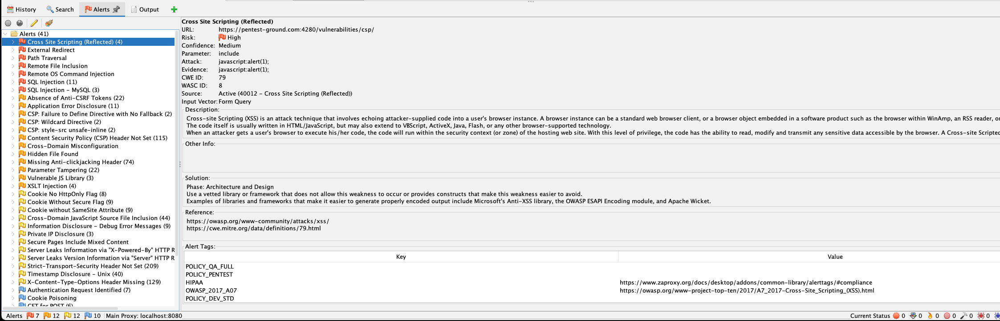
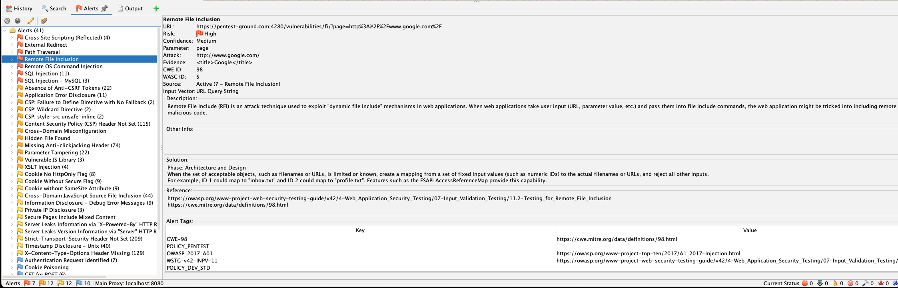
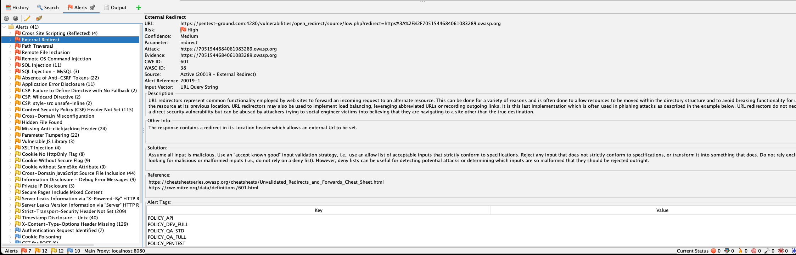
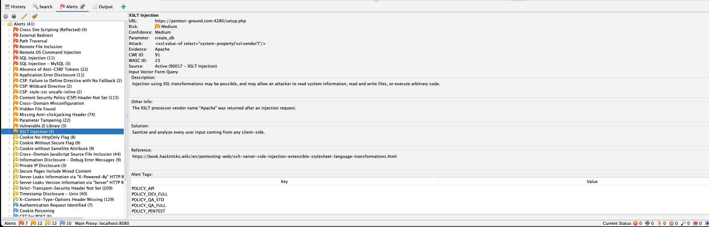
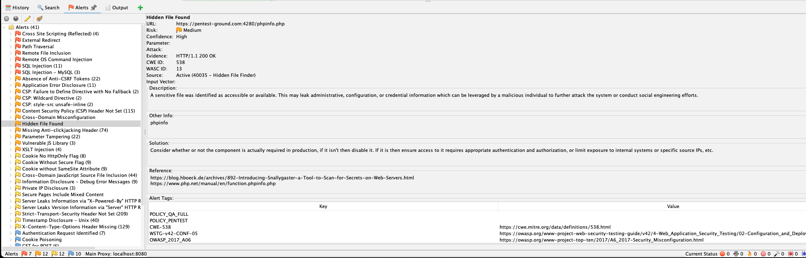
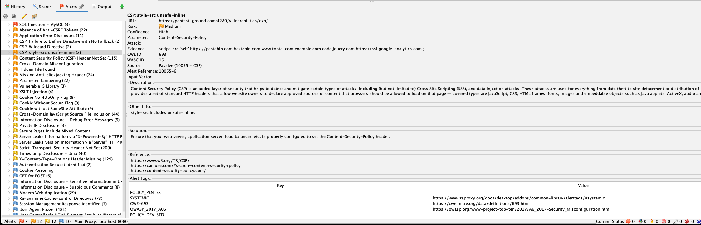

This document fulfills the requirements for the Secure Software Engineering (S1-25_CCZG566) "Vulnerability Assessment using a Security Testing Tool" assignment. The instructions and submission requirements are outlined below.
The tool selected for this vulnerability assessment is OWASP ZAP (Zed Attack Proxy) version 2.16.1.
OWASP ZAP is a world-renowned, open-source web application security scanner. As a flagship project of the Open Web Application Security Project (OWASP), it is actively maintained and widely trusted by security professionals globally. It offers a comprehensive suite of tools for both automated scanning and in-depth manual penetration testing, making it an ideal choice for identifying a broad range of security vulnerabilities.
The application selected for testing is https://pentest-ground.com, a publicly available web application designed specifically for security testing and training.
This application is an ideal target as it intentionally contains a wide array of vulnerabilities, simulating a real-world, insecure environment. This allows for a thorough evaluation of the security tool's effectiveness and provides a rich set of findings for analysis and remediation practice. The scan focused primarily on the service running at https://pentest-ground.com:4280.
The vulnerability assessment was conducted using OWASP ZAP's automated scanning capabilities. The process involved the following key steps:
The ZAP scan generated a comprehensive report that identified a total of 41 alerts across various risk levels. The majority of the application's vulnerabilities were found on the service running at https://pentest-ground.com:4280.
The findings included 7 High-risk, 12 Medium-risk, and 12 Low-risk vulnerabilities. The high-risk alerts represent critical security flaws, such as SQL Injection and Remote OS Command Injection, which could lead to a full system compromise. The medium-risk alerts, including misconfigurations and the use of vulnerable libraries, present a significant security risk that attackers could exploit. This analysis focuses on the top 10 most critical findings for a detailed breakdown.
The following sections provide a detailed analysis for ten of the most critical vulnerabilities identified in the scan. Each analysis covers the nature of the vulnerability, its potential impact on the application and its users, and recommended mitigation measures.
Risk: High, Confidence: Medium
URL: POST https://pentest-ground.com:4280/vulnerabilities/csp/
Description: SQL injection may be possible.
Other Info: The page results were successfully manipulated using the boolean conditions `[ZAP AND 1=1 -- ]` and `[ZAP AND 1=2 -- ]`...
Parameter: include
Attack: ZAP AND 1=1 --

Meaning/Nature: SQL Injection is a critical vulnerability that occurs when an attacker can manipulate the SQL queries an application makes to its database. This is typically achieved by inserting malicious SQL code into a user input field. In this case, the include parameter was successfully manipulated with a boolean condition (AND 1=1), altering the query's logic and demonstrating that the application directly concatenates user input into its SQL statements without proper sanitization.
Impact: A successful SQL Injection attack can have severe consequences. An attacker could bypass authentication, retrieve sensitive data (like user credentials, personal information, or financial records), modify or delete data, and in some cases, execute administrative commands on the database, potentially leading to a full system compromise.
Mitigation: The primary defense is to stop writing dynamic queries. Instead, use parameterized queries (also known as prepared statements). This practice separates the SQL code from the user-supplied data, ensuring the data is treated as a literal value and not as executable code. Additionally, all user input should be validated against a strict allow-list of expected formats, and the application's database user should be granted only the minimum privileges necessary for its operation (Principle of Least Privilege).
Risk: High, Confidence: Medium
URL: POST https://pentest-ground.com:4280/vulnerabilities/exec/
Description: Attack technique used for unauthorized execution of operating system commands...
Other Info: The scan rule was able to retrieve the content of a file or command by sending `[ZAP&cat /etc/passwd&]`...
Parameter: ip
Attack: ZAP&cat /etc/passwd&
Evidence: root:x:0:0 (from response body)

Meaning/Nature: Remote OS Command Injection allows an attacker to execute arbitrary commands on the host operating system through a vulnerable application. This flaw arises when the application passes unsafe user-supplied data (in this case, through the ip parameter) to a system shell. The scanner confirmed this vulnerability by injecting a command (cat /etc/passwd) and successfully reading the contents of the system's password file, which was then returned in the HTTP response.
Impact: This is one of the most dangerous vulnerabilities, as it can grant an attacker a direct shell on the server. This provides a foothold to explore the internal network, exfiltrate sensitive data, install persistent malware or ransomware, or use the compromised server to launch attacks against other systems.
Mitigation: The most effective mitigation is to avoid calling external OS commands from application code whenever possible. Instead, use built-in library functions to achieve the same functionality. If system commands are unavoidable, all user input must be strictly validated and sanitized to remove special characters like &, |, ;, and >. Running the web application with a low-privilege user account can also limit the potential damage an attacker can cause.
Risk: High, Confidence: Medium
URL: GET https://pentest-ground.com:4280/vulnerabilities/fi/?page=%2Fetc%2Fpasswd
Description: The Path Traversal attack technique allows an attacker access to files, directories, and commands that potentially reside outside the web document root directory...
Parameter: page
Attack: /etc/passwd
Evidence: root:x:0:0 (from response body)

Meaning/Nature: Path Traversal (also known as Directory Traversal) is a vulnerability that lets an attacker read arbitrary files on the server. It occurs when an application uses user-supplied input to construct a path to a file without properly validating it. An attacker can use special character sequences, like ../, or absolute file paths to navigate outside the web root directory. The scanner demonstrated this by requesting /etc/passwd via the page parameter and successfully retrieving its contents.
Impact: The impact is severe information disclosure. Attackers can access sensitive files, including application source code, configuration files containing database credentials, and system files like /etc/passwd. This information can be used to understand the application's inner workings and plan further, more targeted attacks.
Mitigation: Input validation is key. The application should not blindly trust user input for file paths. Instead, it should use a predefined allow-list of safe files or ensure the user-supplied path is properly canonicalized and verified to be within the intended directory. Running the application in a sandboxed or "jailed" environment can also restrict its file system access, limiting the scope of a potential traversal attack.
Risk: High, Confidence: Medium
URL: POST https://pentest-ground.com:4280/vulnerabilities/csp/
Description: Cross-site Scripting (XSS) is an attack technique that involves echoing attacker-supplied code into a user's browser instance...
Parameter: include
Attack: javascript:alert(1);
Evidence: javascript:alert(1);

Meaning/Nature: Reflected Cross-Site Scripting (XSS) is a client-side vulnerability where an application reflects malicious script from an HTTP request back to the user's browser. The script is then executed in the context of the trusted site. In this instance, a JavaScript payload was injected into the include parameter, and the server included it in the response, causing it to execute in the browser. This attack is "reflected" because the payload is delivered via a single request and response; it is not stored permanently on the server.
Impact: XSS compromises the user, not the server directly. An attacker can hijack a user's session by stealing their session cookies, deface parts of the website, redirect the user to a malicious site for phishing, or capture keystrokes. This undermines user trust and can lead to account takeovers.
Mitigation: The primary defense is context-aware output encoding. All user-supplied data should be encoded before it is rendered on an HTML page to ensure the browser interprets it as text, not as executable code. Implementing a strong Content Security Policy (CSP) is a crucial second layer of defense, as it can instruct the browser to block or report attempts to execute injected scripts.
Risk: High, Confidence: Medium
URL: GET https://pentest-ground.com:4280/vulnerabilities/fi/?page=http%3A%2F%2Fwww.google.com%2F
Description: Remote File Include (RFI) is an attack technique used to exploit "dynamic file include" mechanisms in web applications...
Parameter: page
Attack: http://www.google.com/
Evidence: <title>Google</title> (from response body)

Meaning/Nature: Remote File Inclusion (RFI) is a vulnerability where an application includes and executes a file from a remote URL based on user-supplied input. This is a particularly dangerous form of file inclusion. The scanner confirmed this by making the application include google.com via the page parameter. An attacker would replace this with a URL pointing to a malicious script hosted on their own server.
Impact: The impact of RFI is almost always Remote Code Execution (RCE). By tricking the application into including and running a script from an attacker-controlled server, the attacker can execute arbitrary code with the same privileges as the web server process. This can lead to a complete compromise of the server, data theft, and using the server as a pivot point for further attacks on the internal network.
Mitigation: The best practice is to avoid including files based on user input. If necessary, maintain a strict allow-list of known, safe files that can be included. PHP configurations should be hardened by disabling allow_url_include and allow_url_fopen in the php.ini file, which prevents the interpreter from fetching and including remote files, thereby mitigating RFI vulnerabilities entirely.
Risk: High, Confidence: Medium
URL: GET https://pentest-ground.com:4280/vulnerabilities/open_redirect/source/low.php?redirect=https%3A%2F%2F7051544684061083289.owasp.org
Description: URL redirectors represent common functionality employed by web sites to forward an incoming request to an alternate resource...
Parameter: redirect
Attack: https://7051544684061083289.owasp.org

Meaning/Nature: An External Redirect (or Open Redirect) vulnerability occurs when an application redirects users to an external URL that is controlled by an attacker. This happens when a redirection URL is specified in a parameter (here, redirect) without proper validation. An attacker can craft a link that appears to go to the legitimate application but actually redirects the user to a malicious site. This is often used in phishing campaigns to trick users into trusting the malicious destination.
Impact: The primary impact is enabling phishing attacks against the application's users. By redirecting from a trusted domain, attackers can make malicious websites seem more legitimate, increasing the likelihood that users will enter sensitive information like credentials or financial details. This can lead to account takeovers, financial loss, and significant damage to the application's reputation.
Mitigation: The most secure approach is to avoid redirects where the destination is specified by user input. If redirects are necessary, maintain an allow-list of approved, safe URLs and only redirect to destinations on that list. If that is not feasible, the application should display an intermediate disclaimer page that warns users they are leaving the site before redirecting them.
Risk: Medium, Confidence: Medium
URL: POST https://pentest-ground.com:4280/setup.php
Description: Injection using XSL transformations may be possible, and may allow an attacker to read system information, read and write files, or execute arbitrary code.
Other Info: The XSLT processor vendor name "Apache" was returned after an injection request.
Parameter: create_db

Meaning/Nature: XSLT (Extensible Stylesheet Language Transformations) Injection occurs when an attacker can upload a malicious XSLT file or inject malicious XSLT code into an XML document that the server processes. Since XSLT is a Turing-complete language, it can be used to perform complex operations. The scanner confirmed this by injecting a payload that forced the XSLT processor to reveal its vendor ("Apache"), indicating that the input was processed as XSLT.
Impact: Depending on the capabilities of the XSLT processor, this vulnerability can be critical. An attacker could potentially read local files, make network connections to other internal systems, or even execute arbitrary code on the server. This can lead to sensitive information disclosure, server-side request forgery (SSRF), or a full system compromise.
Mitigation: User input should never be placed directly into XSLT stylesheets. If user-controlled data must be used, it should be strictly sanitized to remove any XML metacharacters. It is also recommended to disable any dangerous features in the XSLT processor, such as the ability to load external documents or execute embedded scripts, if they are not required for the application's functionality.
Risk: Medium, Confidence: High
URL: GET https://pentest-ground.com:4280/phpinfo.php
Description: A sensitive file was identified as accessible or available. This may leak administrative, configuration, or credential information...
Other Info: phpinfo
Evidence: HTTP/1.1 200 OK

Meaning/Nature: A phpinfo.php file was found to be publicly accessible on the web server. This file is a standard PHP script that outputs a large amount of detailed information about the PHP environment and server configuration. This includes the PHP version, loaded extensions, server variables, and other configuration settings. While useful for debugging during development, it should never be exposed on a production server.
Impact: The information disclosed by phpinfo.php is a goldmine for an attacker. It provides a detailed map of the server's software and configuration, allowing an attacker to identify specific versions of components with known vulnerabilities. This significantly lowers the effort required to find an exploitable flaw and tailor an attack specifically for this server, increasing the chances of a successful compromise.
Mitigation: The phpinfo.php file should be removed from the web server's document root immediately. It is a development and debugging tool and has no place in a production environment. As a general rule, no debugging scripts or unnecessary files should be left on a production server.
Risk: Medium, Confidence: Medium
URL: GET https://pentest-ground.com:5013/static/bootstrap/js/bootstrap.bundle.min.js
Description: The identified library appears to be vulnerable.
Other Info: The identified library bootstrap, version 4.5.3 is vulnerable. CVE-2024-6531

Meaning/Nature: The application is using a third-party JavaScript library (Bootstrap version 4.5.3) that contains a known security vulnerability, identified as CVE-2024-6531. Modern web applications rely heavily on external components, and failing to keep them updated is a common security oversight. Attackers actively scan for applications using outdated and vulnerable libraries as it provides a reliable and easy way to find an entry point.
Impact: Exploiting a known vulnerability in a third-party component can lead to various attacks, most commonly Cross-Site Scripting (XSS). If the vulnerable component is used to handle or render data, an attacker could inject malicious scripts that execute in the user's browser. This can lead to session hijacking, data theft, or defacement of the website, compromising user accounts and trust in the application.
Mitigation: A robust patch management process is essential. Regularly scan for and update all third-party components, including JavaScript libraries, to their latest stable versions. Use tools like OWASP Dependency-Check or commercial Software Composition Analysis (SCA) tools to automate the process of identifying and tracking vulnerable dependencies in your projects.
Risk: Medium, Confidence: High
URL: GET https://pentest-ground.com:4280/vulnerabilities/csp/
Description: The Content Security Policy fails to define one of the directives that has no fallback.
Other Info: The directive(s): frame-ancestors, form-action is/are among the directives that do not fallback to default-src.

Meaning/Nature: Content Security Policy (CSP) is a powerful security header that helps prevent client-side attacks like XSS. However, it must be configured correctly to be effective. The scan identified multiple issues, including missing directives (frame-ancestors) and overly permissive settings (wildcard sources). When a directive is missing and has no fallback to default-src, it is effectively unrestricted. This weakens the policy and may provide a false sense of security.
Impact: A misconfigured or weak CSP can be easily bypassed by an attacker, rendering it ineffective as a defense against XSS. For example, a missing frame-ancestors directive allows the site to be framed by a malicious page, enabling clickjacking attacks. Overly broad directives can allow scripts to be loaded from untrusted domains, defeating the primary purpose of CSP.
Mitigation: Implement a strict and specific CSP. Avoid using wildcards (*) in directives. Explicitly define sources for all resource types (scripts, styles, images, etc.) and use the default-src 'none' directive as a fallback to block anything not explicitly allowed. Use tools like Google's CSP Evaluator to analyze and improve your policy. Ensure all critical directives, including frame-ancestors and object-src, are set to restrictive values.